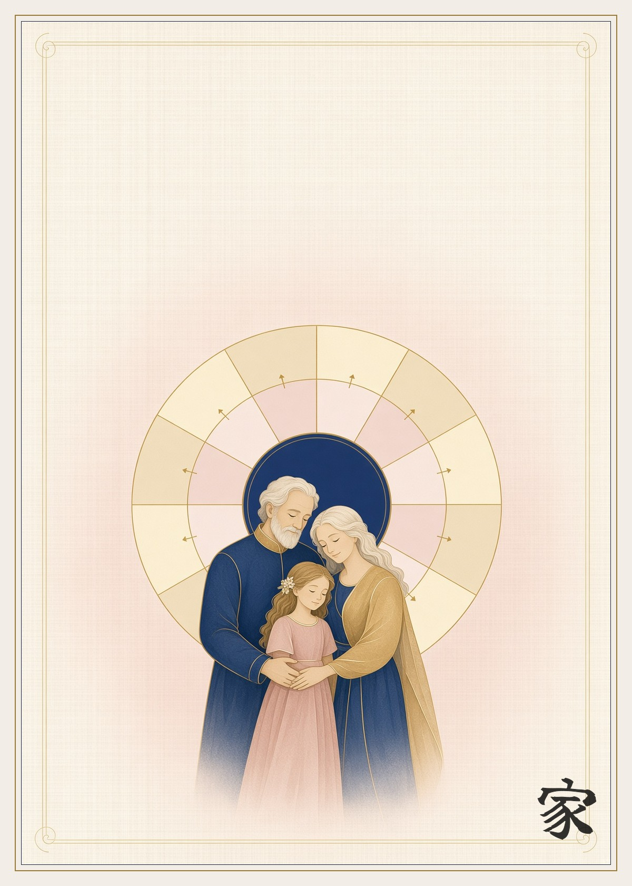
A book of turns
The Art of Making a Family
Twelve months. Twelve evils. And the tool each one carries.
Read from the inside out. Each evil in the inner ring carries, hidden inside it, the force that can defeat it. The outer ring names what that force becomes when it is turned. A family is not made by the absence of these twelve. It is made by the turn.
Blessed be upon God, blessed be upon God's creations.
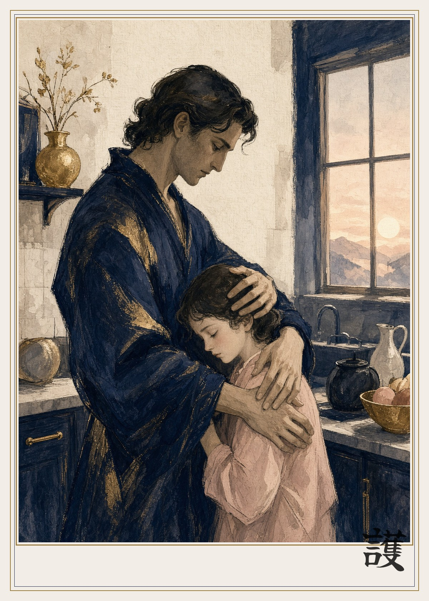
January · 01 · 護
Anger turned Protection
Anger is the house defending itself before it knows the size of the threat. Left raw, it burns the people it meant to keep. The heat was never the enemy. Direction was. Turned, the same heat stands in the doorway so the small ones can sleep. The old books do not praise rage. They do ask the strong to become a wall for the weak. Protection is anger that has chosen a door instead of a face.
When the heat rises, name who you are actually trying to keep safe. Put your body between the danger and the child. Do not spend the heat on the child.
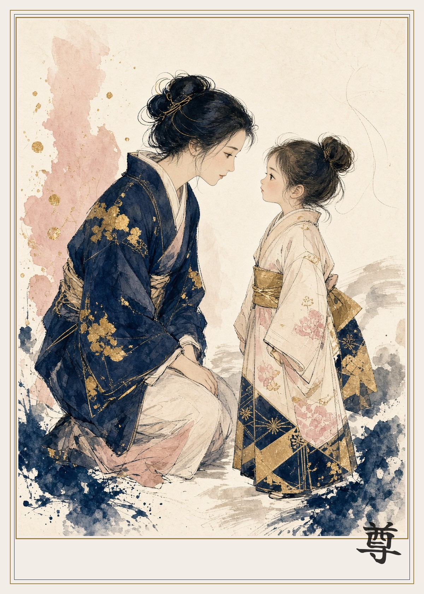
February · 02 · 尊
Pride turned Dignity
Pride needs an audience and a person beneath it. Dignity needs neither. Hidden inside pride is the refusal to be nothing. That refusal is good. It becomes poison only when someone else must be smaller for it to stand. Turned, it stands up straight and lets everyone else stand too. A parent who comes down to a child's height does not lose rank. Rank was the costume. The person remains.
Once this month, take the lower seat on purpose. Let someone in the house finish a story you could have told better.
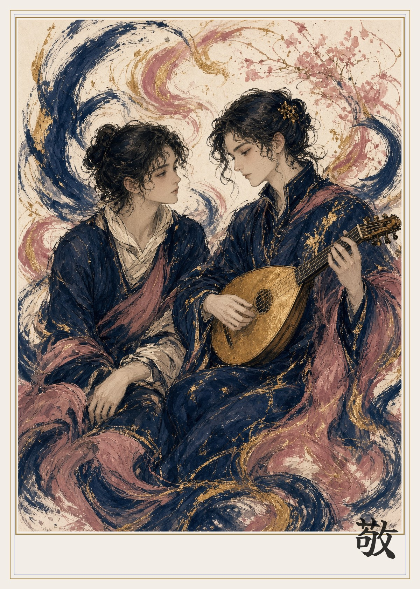
March · 03 · 敬
Envy turned Admiration
Envy is love of a good thing, twisted until the good thing must shrink. The love was real. That is why it hurts. Turned, the same look becomes admiration, which is fed by the other person's light instead of starved by it. Siblings survive on this turn. A house that can clap for its own is already rich. The books of many peoples say the eye is the first thief. They also say the eye can be the first blessing.
Say out loud, in the hearing of the person, the exact thing you wished were yours. Then leave it theirs.
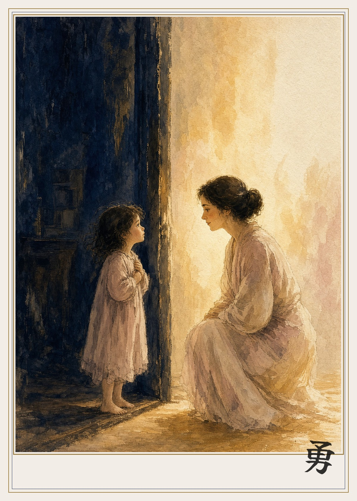
April · 04 · 勇
Fear turned Courage
Fear is the mind counting what it loves and what it could lose. That count is not a defect. It is evidence of attachment, and attachment is how a family exists. Courage is not the absence of the count. Courage is fear that stays in the room. The parent at the dark door does not stop being afraid. They stop leaving. Across the old counsel the sentence is the same: be with the frightened. Do not perform fearlessness.
Stay until the scared person is breathing slowly. Do not explain the dark away before you have sat in it.
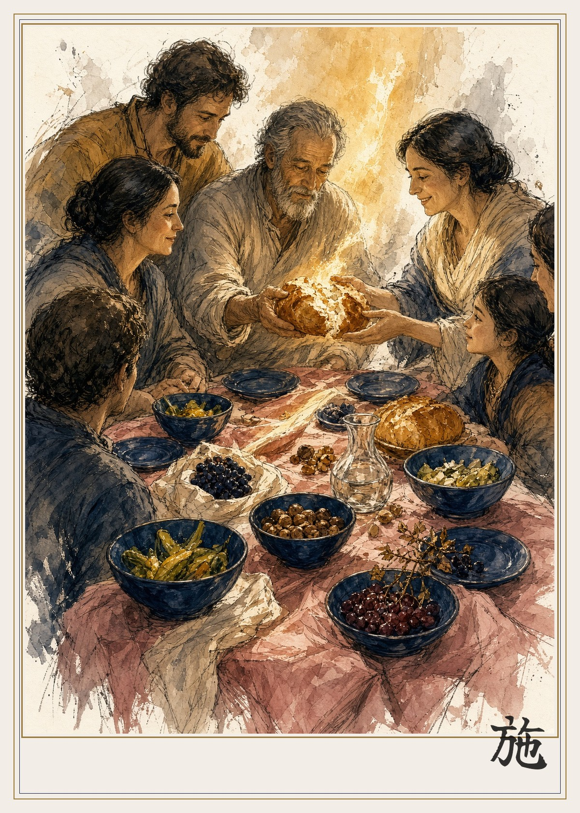
May · 05 · 施
Greed turned Generosity
Greed is the fear that there will not be enough, wearing the mask of appetite. The hidden force is the knowledge that bread kept in a closed hand goes stale. Turned, the clutch opens. Generosity is not the opposite of need. It is need that has remembered the table. Sociology of the lasting house is simple: the storehouse is a common, or it becomes a grievance. Psychology of the open hand is also simple. Sharing teaches the body that tomorrow is not only a threat.
Pass the best portion first. Not the remainder. The first piece is the one that teaches the house what it is.
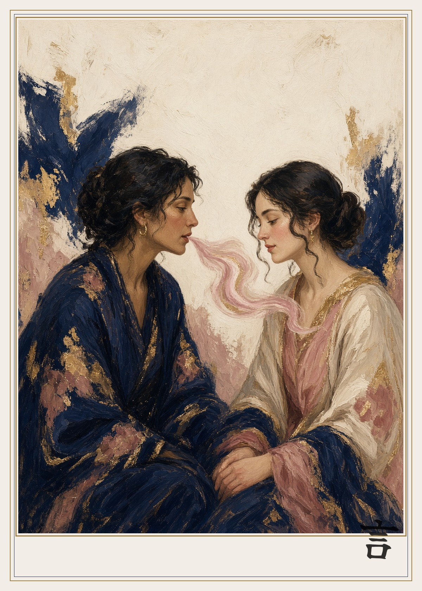
June · 06 · 言
The Tongue turned Healing speech
The tongue is the smallest member and the widest fire. Every tradition that lasted put a guard on it, because a family is made of sentences more than of walls. The same instrument that cuts can close a wound, if it tells the truth without the extra sentence that was only meant to win. Healing speech is not sweetness. Sweetness can be a lie. Healing speech is accuracy with mercy. It names the hurt and refuses the insult.
Before the second sentence, ask whether it heals or only wins. Speak the first. Keep the second.
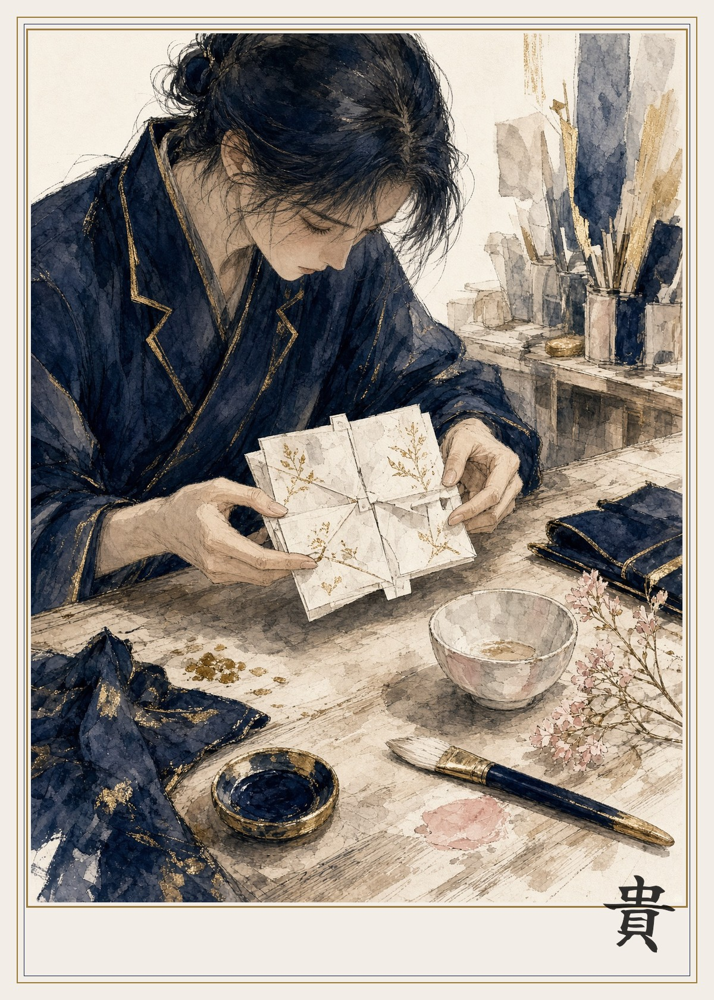
July · 07 · 貴
Contempt turned Appreciation
Contempt is a shortcut. It saves a person from having to look. Inside it sits the very power it refuses to use: the power to see a thing clearly. Clear sight is the beginning of thanks. Appreciation is looking that did not turn away. A family is a long school of the ordinary, the meal, the repaired hinge, the repeated story. What is despised at home is despised twice, because home was the place it should have been safe to be plain.
Notice one unpraised labor in the house and thank the person for the labor, not for being easy to live with.
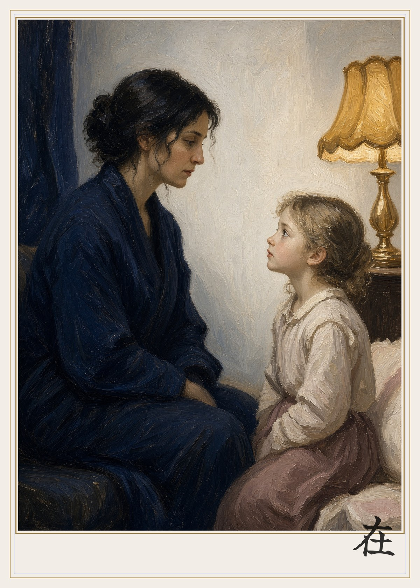
August · 08 · 在
Silence turned Presence
There is a silence that punishes and a silence that accompanies. They use the same closed mouth. The difference is whether the person has left while remaining in the chair. Cold silence is absence wearing a body. Presence is that silence warmed by staying. The old practice of keeping watch, of sitting with the sick, of not filling the air, is the turn. Put the object down. Let the eyes finish the sentence the mouth is not ready to speak.
For one evening, put the glowing thing in another room. Sit where you can be seen. You do not have to perform a conversation. You do have to be there.
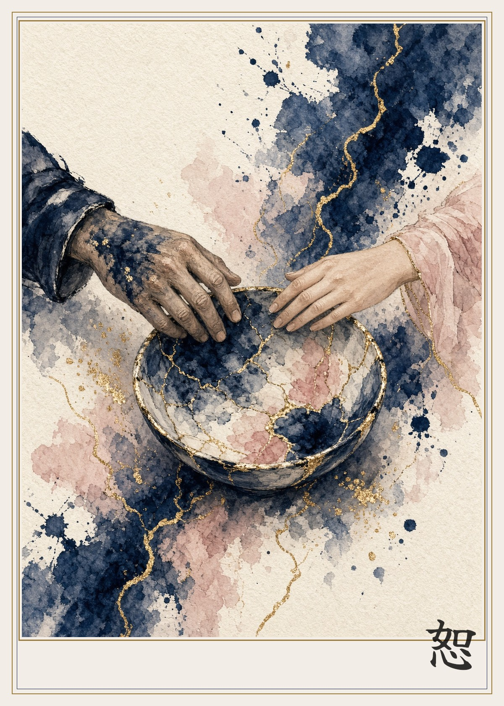
September · 09 · 恕
Betrayal turned Forgiveness
Betrayal proves that trust was real, because only a real bond can break with that sound. The hidden force is the memory of the bond. Forgiveness is not the pretence that the bowl never cracked. It is gold in the crack, and the decision to eat from that bowl again, slowly, with the crack visible. A family that cannot mend becomes a set of strangers who still share a key. Mercy here is not amnesia. It is the refusal to make the break the only story the children inherit.
Name the break once, plainly, without the extra charges. Then do one small trustworthy thing, and do it again tomorrow.
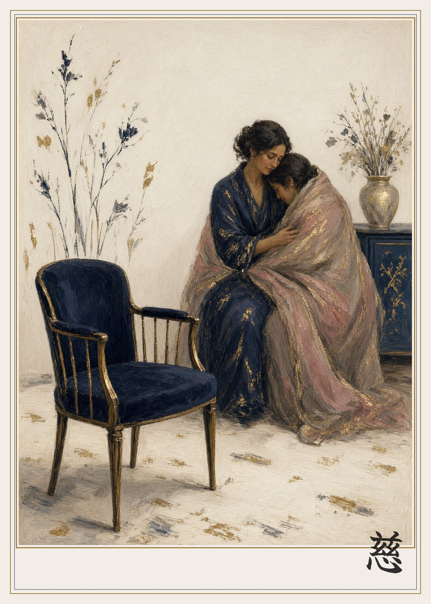
October · 10 · 慈
Grief turned Compassion
Grief is love with nowhere to go. It feels like an evil because it stops the house. It is not an evil. It is a force large enough to be mistaken for one. Turned, it recognizes the same wound in another body and does not hurry it. Compassion is grief that has sat down beside someone else. The empty chair is not decorated away. The shawl is the theology. Every sacred house that lasted taught its people to weep with those who weep, and only then to speak.
Do not correct a grieving person into cheer. Bring food, take the lower seat, and let the name of the absent be said.
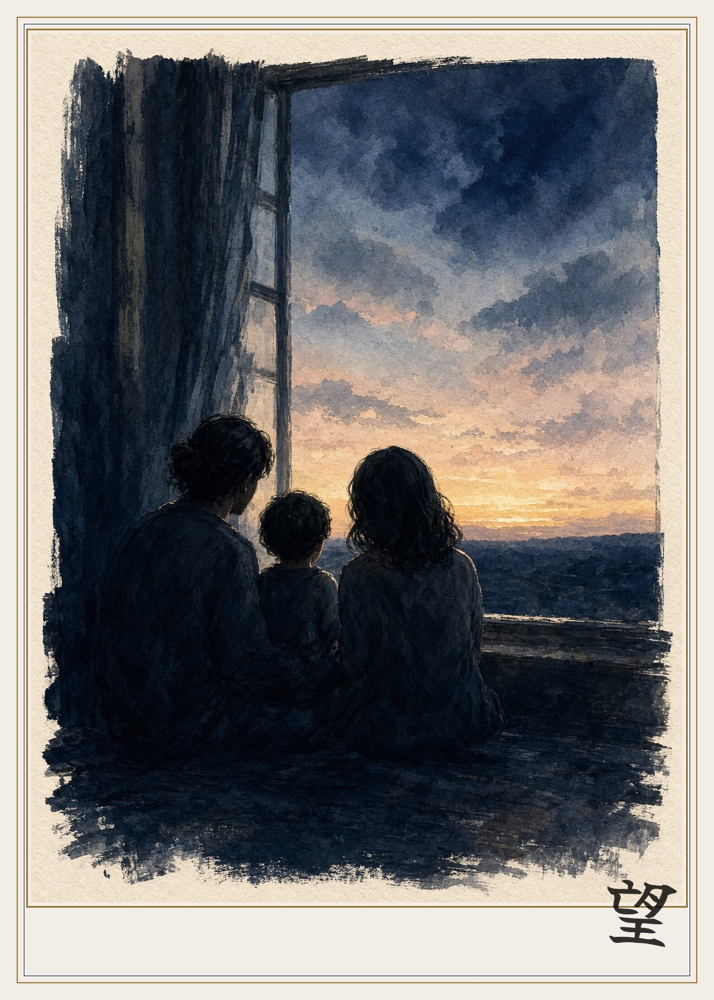
November · 11 · 望
Despair turned Hope
Despair says the dawn is a lie because the room is dark. The force inside it is the fact that someone is still at the window. Waiting is already a kind of faith, even when it feels like defeat. Hope, in the old sense, is not a mood and not a forecast. It is the small fidelity of looking again. Families are made of that looking: one more morning, one more place set, one more attempt at a gentler sentence. Sociology calls this resilience. The older word is faithfulness.
Open the curtain before you decide what the day is. Let the house see you do it.
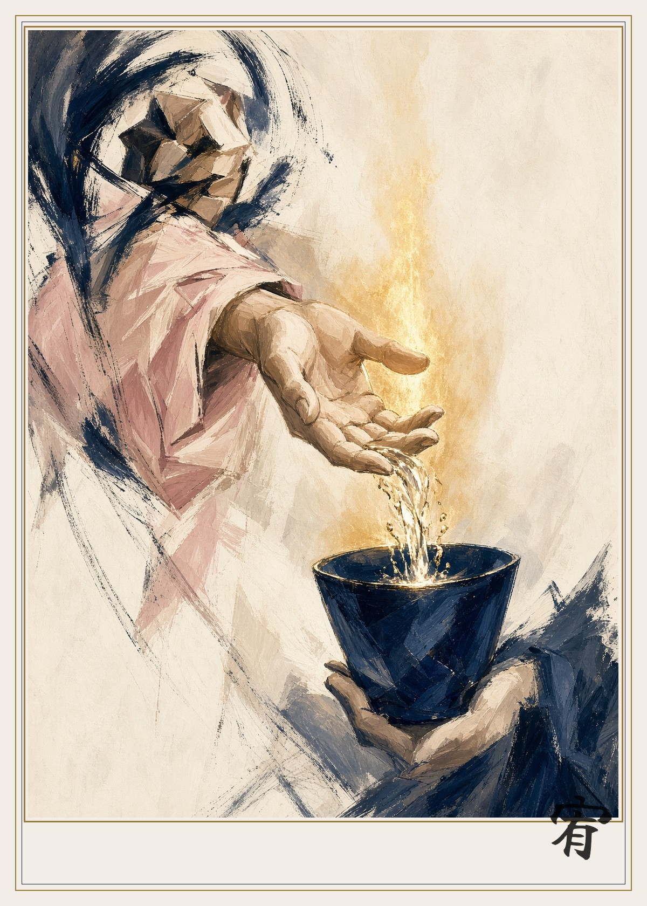
December · 12 · 宥
Revenge turned Mercy
Revenge believes that pain can be balanced by being copied. It cannot. The copy multiplies, and the family becomes a ledger. The books that endured say the same hard thing in different grammars: the injury stops when someone refuses to become it. Mercy is not the announcement that the wrong was small. Mercy is the open hand and the cup of water. It does not erase the account. It stops the account from becoming the family name.
Do one undeserved kindness to the person you are keeping score against. Do not mention the score.
How the one art was made
The wheel is the instruction. Read from the inside out. The evil is not an invader from outside the house. It is a force the house already has, facing the wrong way. Turn it, and it becomes the tool.
This is one philosophical art, not a claim to have translated ten thousand books line by line. What the oldest houses repeat, under different names, is small enough to carry: guard the tongue, feed the guest first, stay with the frightened, weep before you advise, do not copy an injury, and remember that the strong exist to be a wall for the weak.
The pictures are original. They sit on the empty sheet, in the black of that ink, with one brush character each. They are not copies of any one canvas. Many manners of drawing are folded into a single quiet hand so the family, not the signature, is what you see.
Blessed be upon God, blessed be upon God's creations.